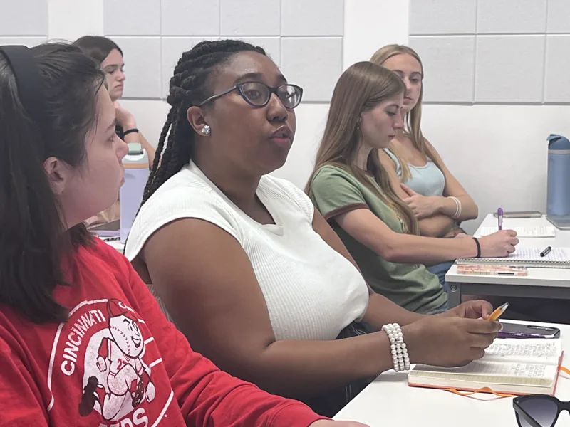
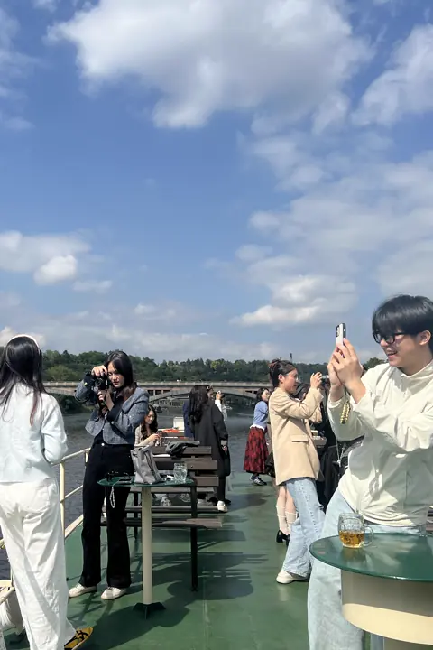
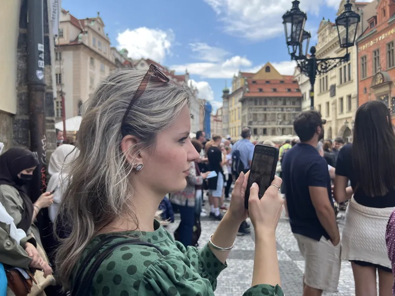
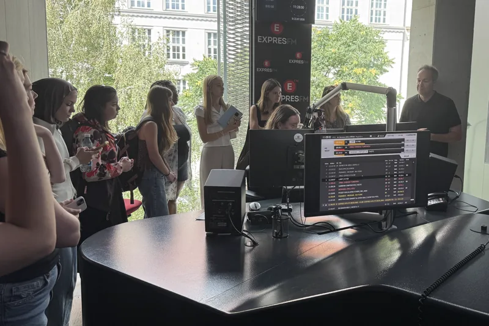
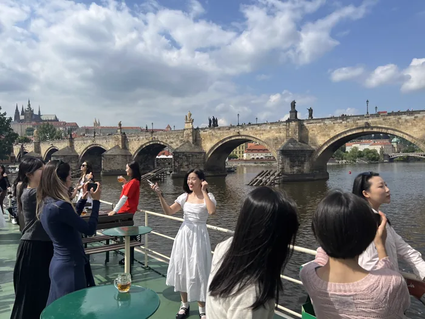
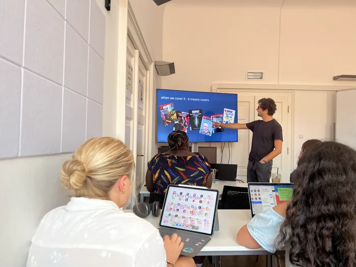
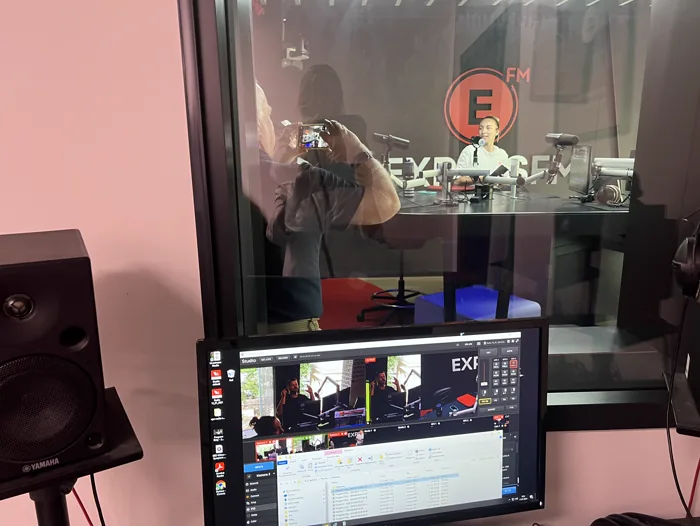
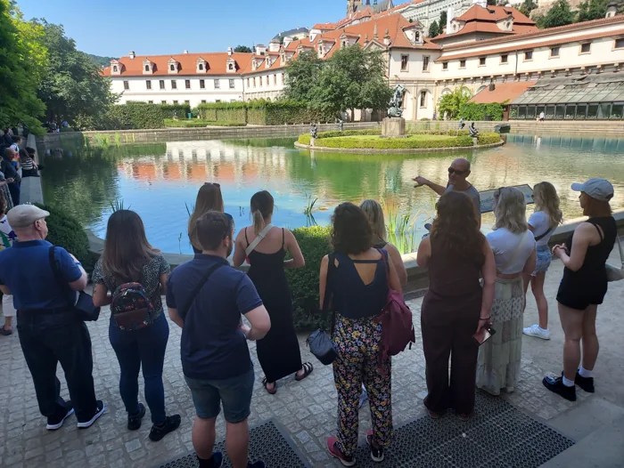
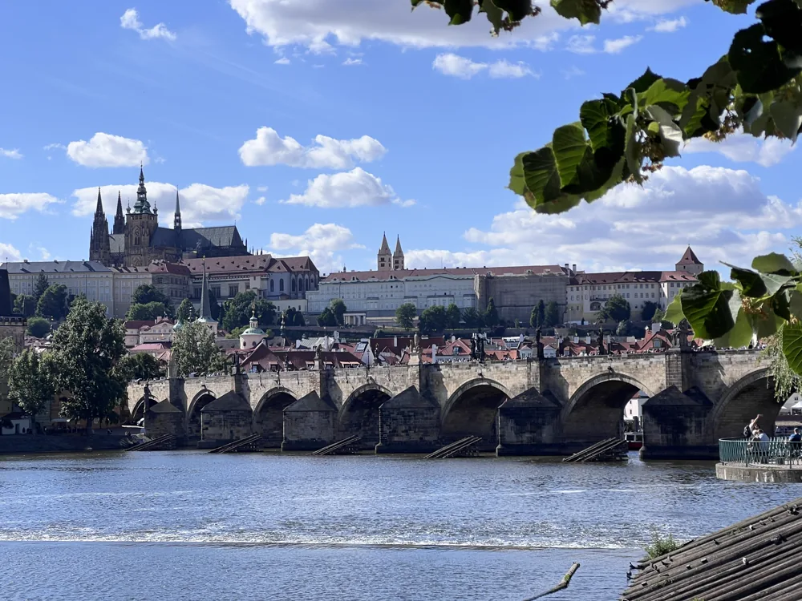

Faculty-Led Courses
Bring your students to Prague for a customized reporting experience built around your curriculum.
Let’s Talk
Experiential journalism programs in Prague that immerse students in real reporting, guided by working journalists.
Schedule a ConversationThanks for visiting the Transitions booth. Whether you’re exploring a faculty-led course, internships, a semester-long partnership, or hands-on international reporting opportunities, we’d love to discuss how we can work together.

Bring your students to Prague for a customized reporting experience built around your curriculum.
Let’s Talk
Our flagship international reporting course in Prague for students who want to report real stories with professional editorial guidance.
View Course
Gain professional experience with Transitions through reporting, communications, and other related internships.
Explore InternshipsParticipants conduct original interviews, receive editorial coaching, and produce publishable work for Transitions and other media outlets.

For more than 25 years, Transitions has combined independent journalism with hands-on educational led by experienced editors and reporters.

Participants work alongside journalists covering Central and Eastern Europe, gaining insight into how professional reporting really happens.

From site visits and guest lectures to housing, local transportation, and scheduling, we take care of every detail.

Prague isn’t just where students study—it becomes what they report on.
From democracy and media freedom to sport, culture, migration, history, and social change, the city offers an extraordinary range of stories within walking distance while providing an accessible gateway to Central and Eastern Europe.
